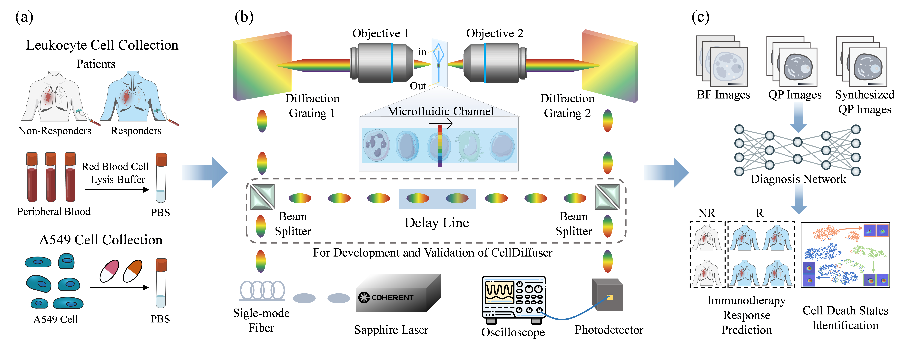
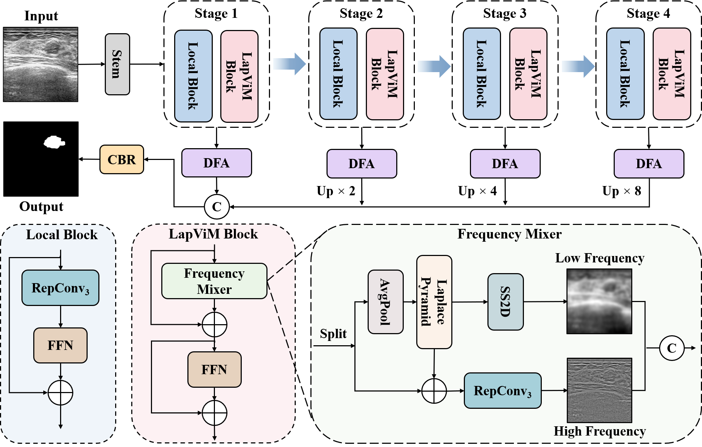
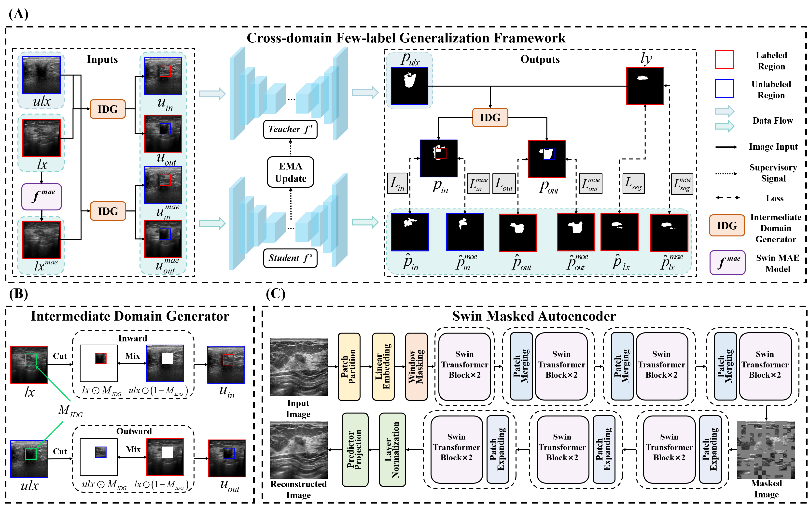
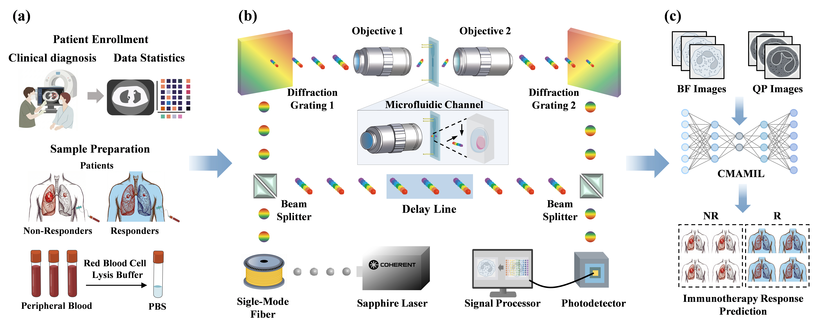
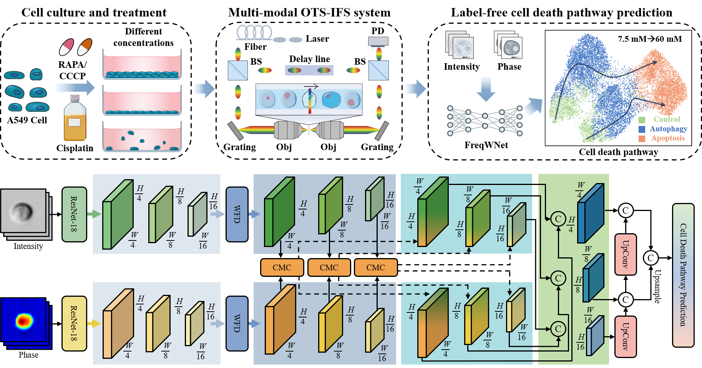
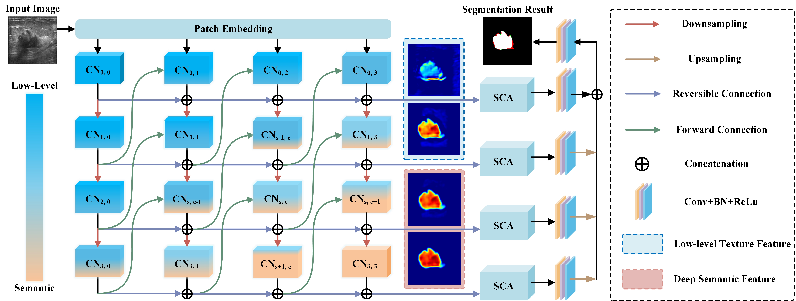
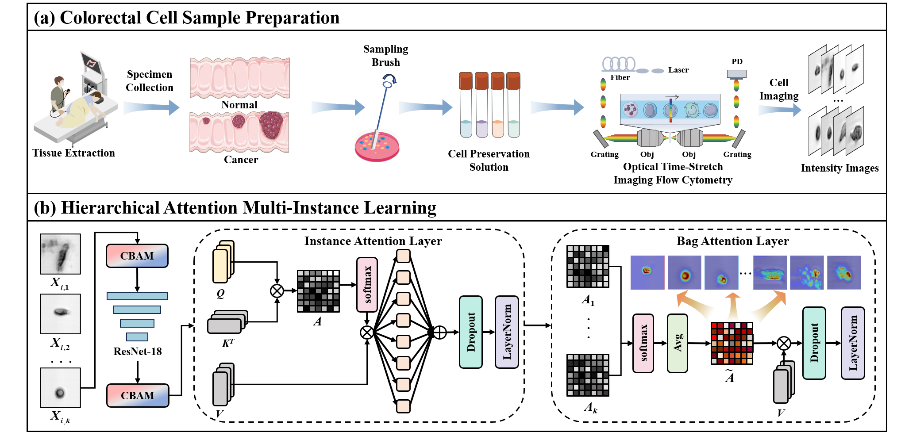
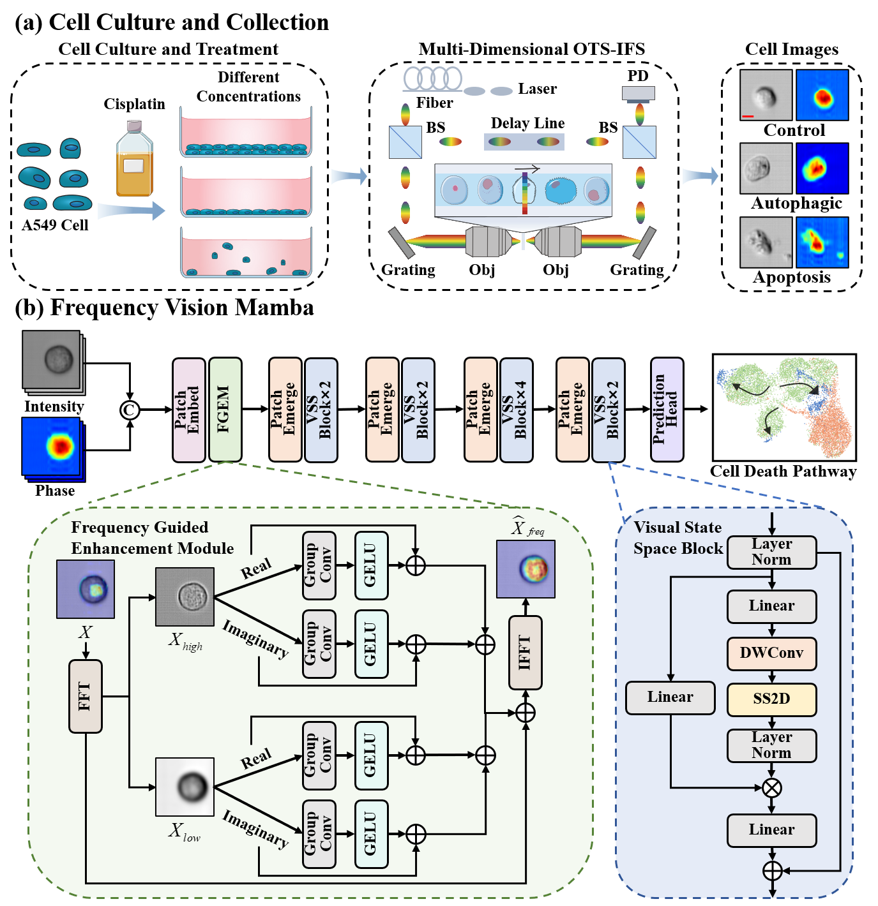
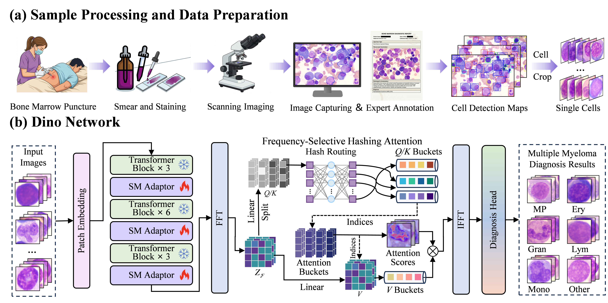
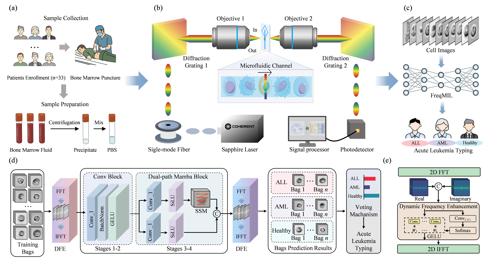

CellDiffuser: Multimodal Optical Time-Stretch Imaging Flow Cytometry and Diffusion Models for Lung Cancer Immunotherapy Diagnosis
ACS Photonics, 13(19):5787-5796, 2026
Paper /
Ph.D. Candidate, School of Integrated Circuits, Wuhan University
I am Zhaoyi Ye. My research focuses on medical image analysis, computational pathology, label-free biomedical imaging, foundation models, and deep learning for cancer diagnosis and treatment response prediction.
* Corresponding authors.

ACS Photonics, 13(19):5787-5796, 2026
Paper /

Journal of Visual Communication and Image Representation, 121:104961, 2026
Paper /

IEEE Journal of Biomedical and Health Informatics, 30(6):5156-5166, 2026
Paper /

Optics and Lasers in Engineering, 203:109785, 2026
Paper /

Displays, 91:103272, 2026
Paper /

Digital Signal Processing, 165:105331, 2025
Paper /

Microscopy Research and Technique, 89(2):292-301, 2026
Paper /

28th International Conference on Medical Image Computing and Computer Assisted Intervention (MICCAI), Daejeon, South Korea, September 23–27, 2025, pp. 230–239.
Paper /

29th International Conference on Medical Image Computing and Computer Assisted Intervention (MICCAI), Strasbourg, France, September 27–October 1, 2026, pp. 623–633
Paper /

51th IEEE International Conference on Acoustics, Speech and Signal Processing (ICASSP), Barcelona, Spain, May 4–8, 2026, pp. 7246–7250.
Paper /
Sept. 2024 - Present
Ph.D. Candidate in Electronic Science and Technology
Sept. 2021 - Jun. 2024
M.S. in Computer Science and Technology